元々年パサー＆ハロウィーンの時期が一番好きな私は
ラボで自分で作る楽しさに目覚め、なんならラボにミシンもあるし...と仮装服を自作する事を思い立ったのあった
仮装したいやつ(DvideosさんのYouTubeの動画より)
布の購入はユザワヤ（横浜ベイクォーター）で購入
４種類の布でトータル9000円くらい（会員価格でちょっとだけ割引された）
手持ちの服でフォルムの似たものを参考に、なんとなく型紙を作る
ラボでミシンを借りて裁縫開始
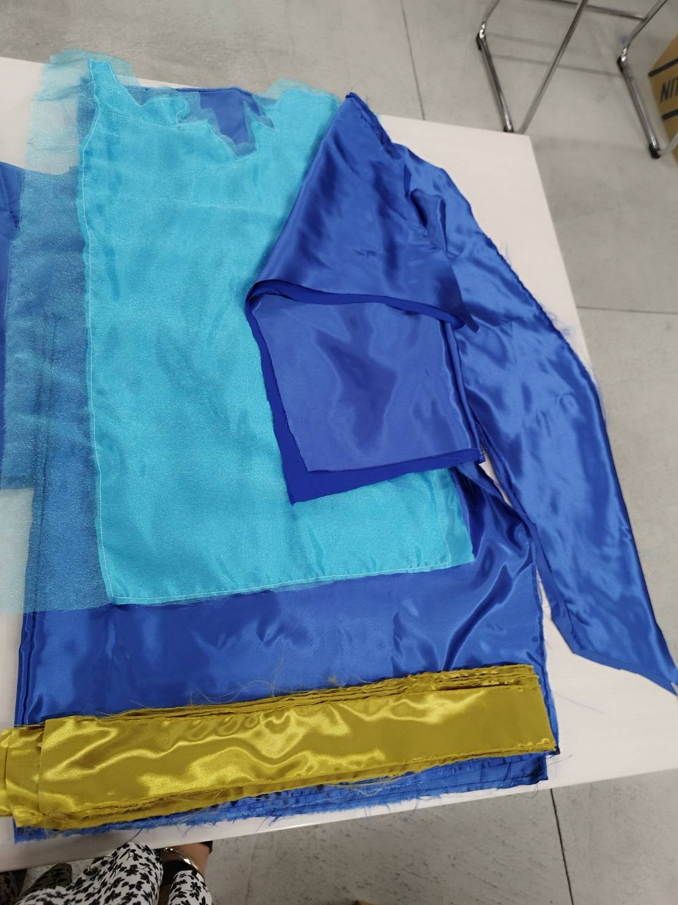
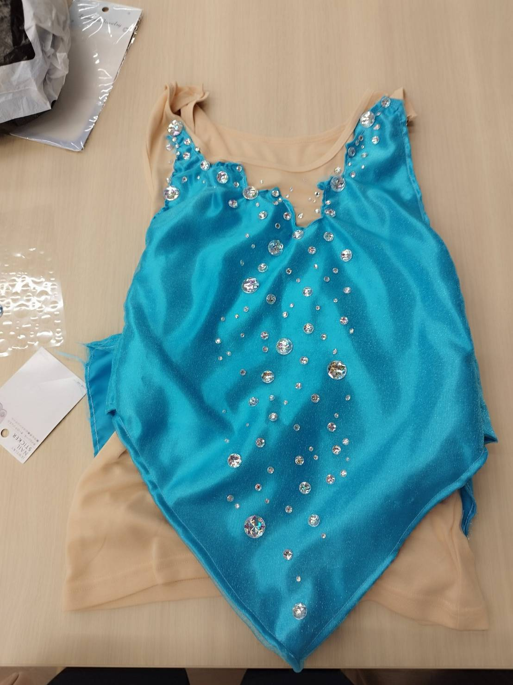
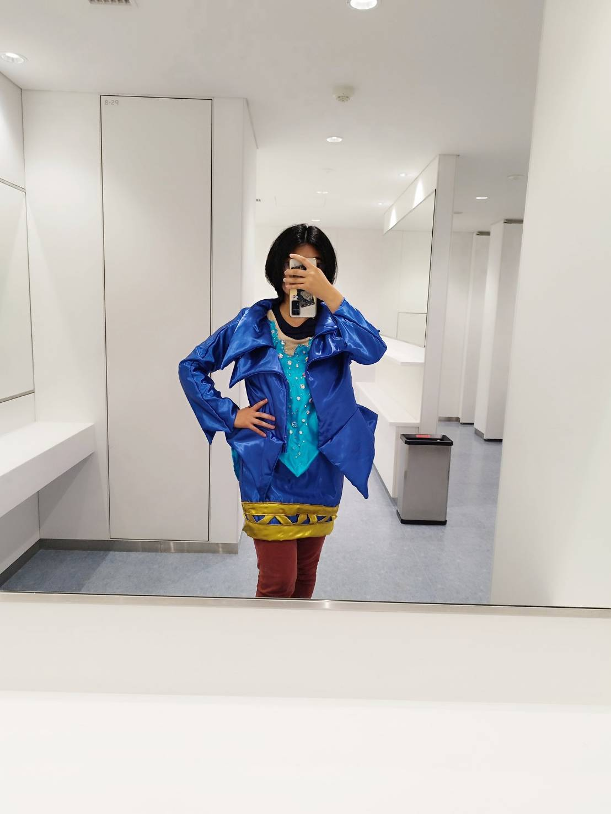
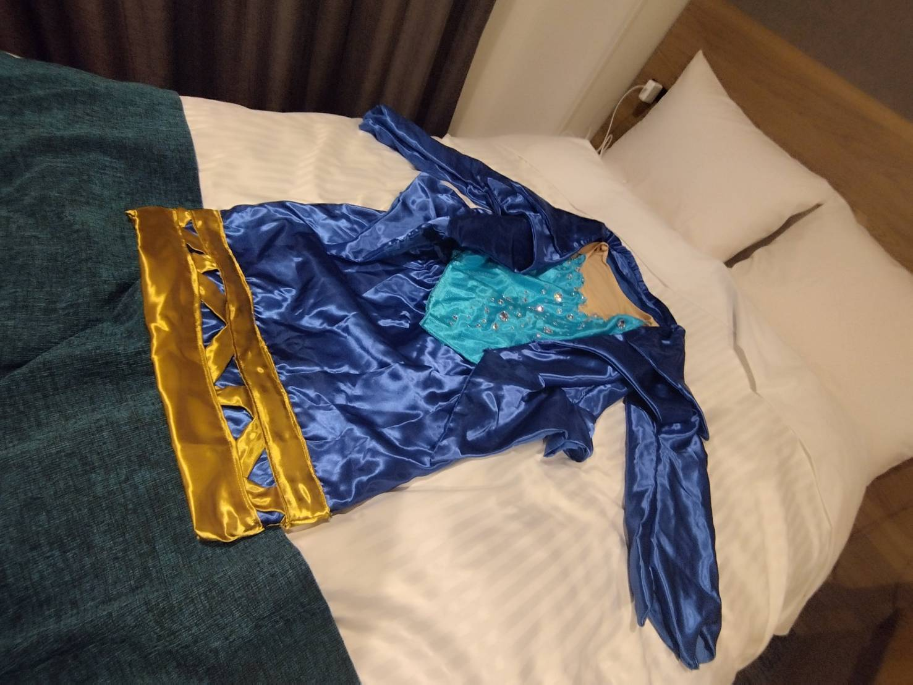
ウィッグはSHEINで1000円くらいのロングウィッグを購入→自分で切る
ショーやパレードをウィッグを外さずに見られるように、頭上の炎パーツは取り外し可能にする（カチューシャに針金を付けオーガンジーを巻く）
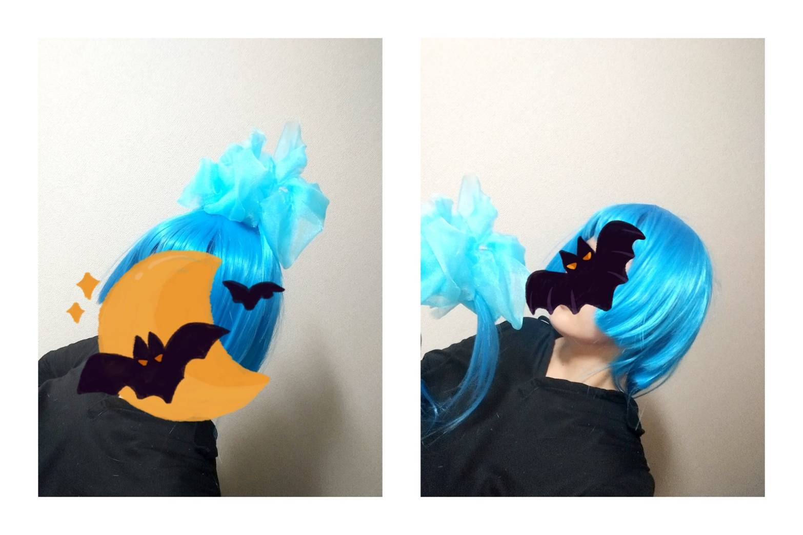
子供向けアニメ「フィニアスとファーブ」のエージェントPをやる
服は手持ち（市販）があるので、アームアバーと尻尾を作る
尻尾はフェルトに毛糸で縞をつけ、アームアバーは100均の布を縫う
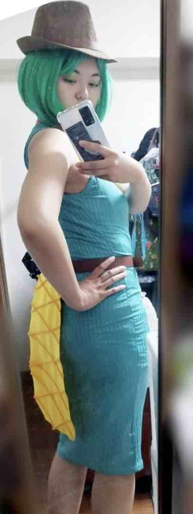
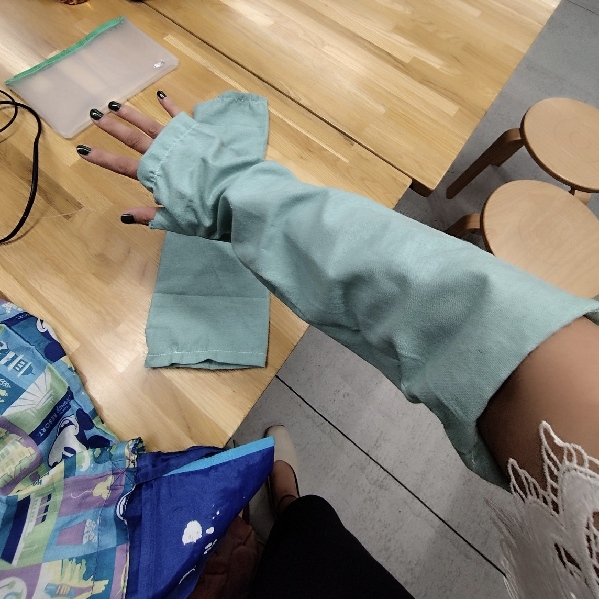
映画「ノートルダムの鐘」のエスメラルダをやる
スカートは手持ち（市販）の25ヤードジプシースカートがあるので、ブラウス、コルセット、腰のスカーフ、イヤリングなどのアクセサリーを作る
イヤリング、ブレスレット、腰スカーフのメダルは3Dプリンタを使う
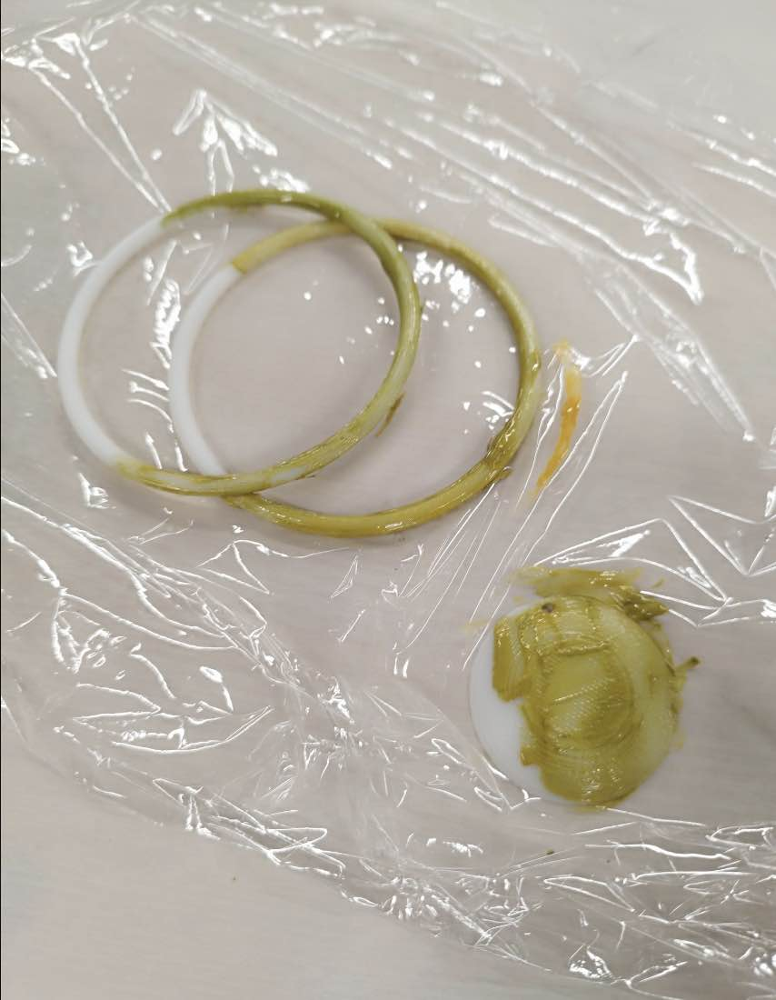
STLデータ：メダル、イヤリング・ブレスレット
今年のハロウィーンのパレードに初めて登場したワゴンプッシャーの仮装をやる
靴と手袋以外は全部手づくり
コートは白黒のグラデーションなので、自力で染める
→貧困限界大学生なので、100均のアクリル絵の具を水で溶かして風呂で染める
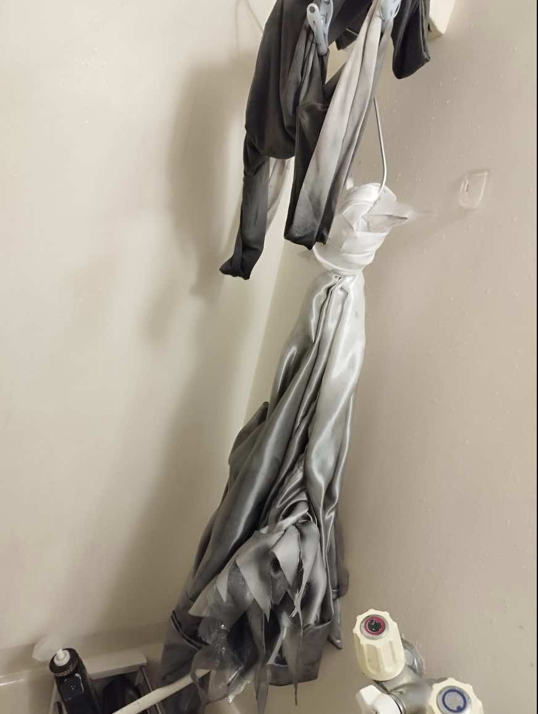
さらに小道具も作る（今回は時間がなかったので紙粘土とアクリル絵の具で自作）
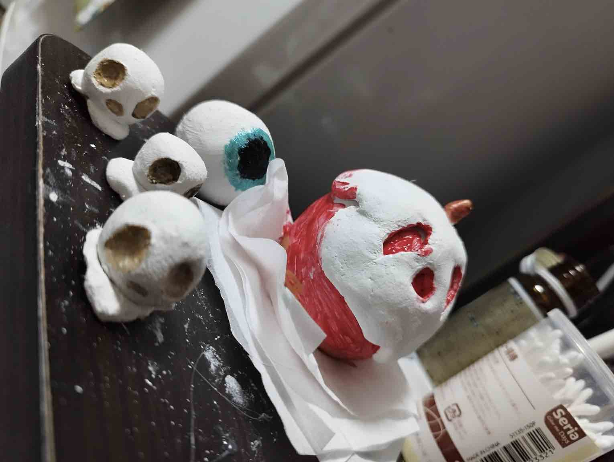
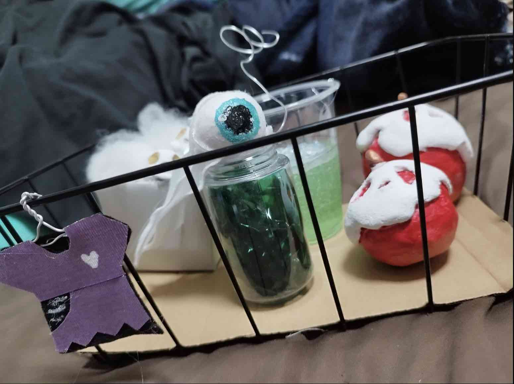